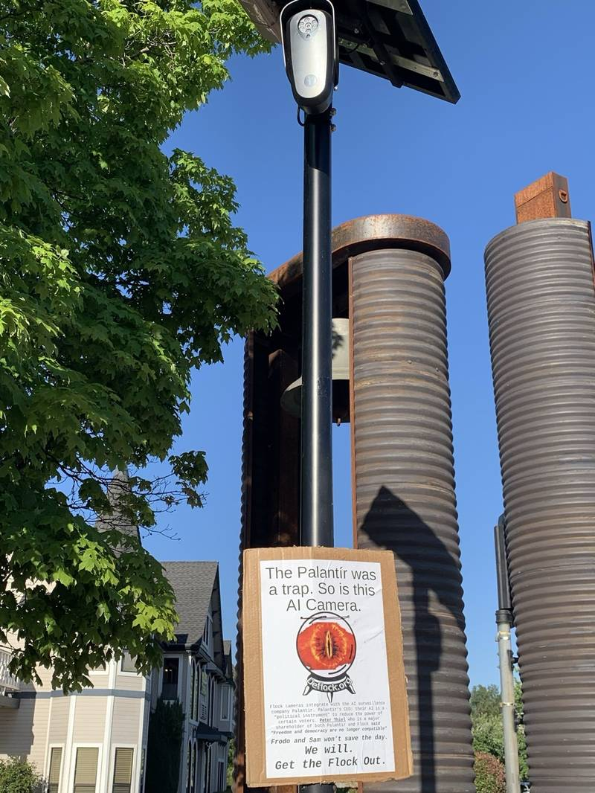
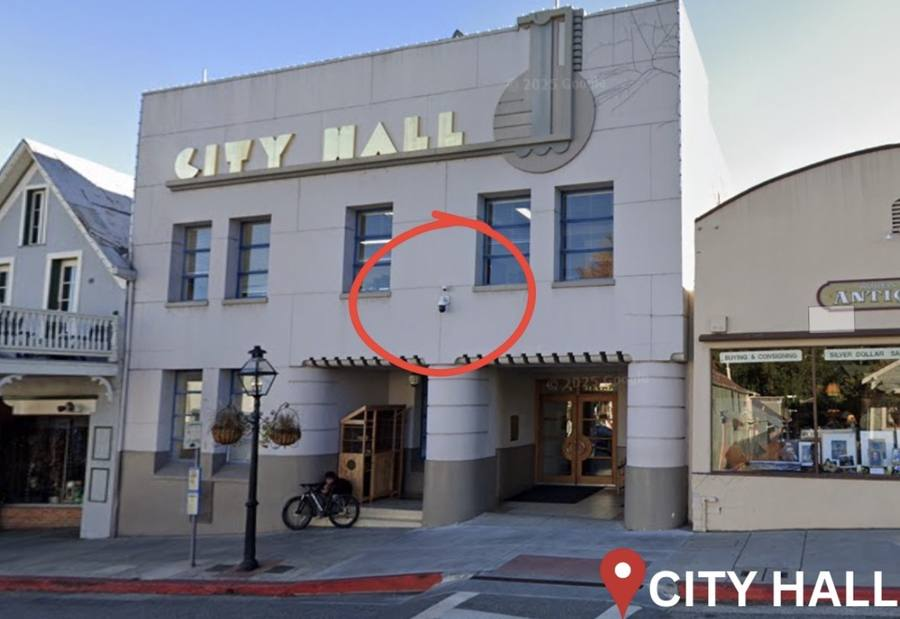
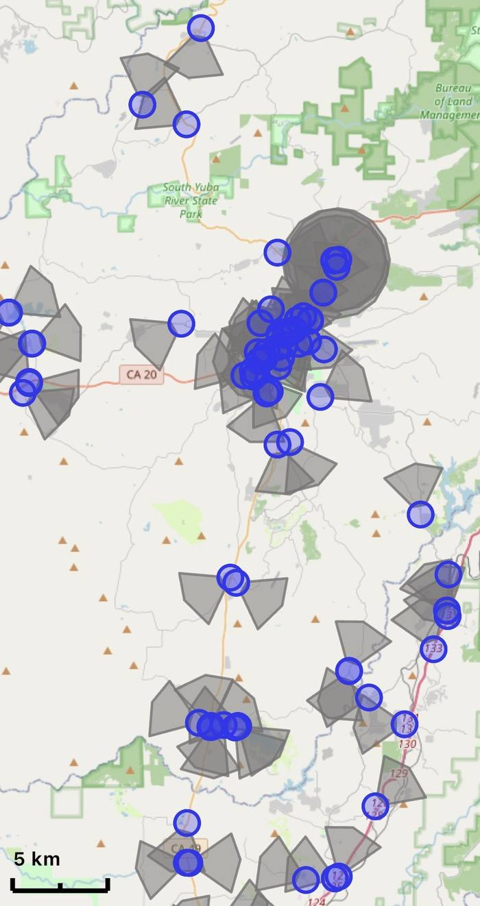

Nevada County, CA Central Sierra Foothills DSA · DeFlock Working Group
We filed public records requests and found that Flock Safety's license plate cameras — installed by Nevada County SO, Grass Valley PD, and Nevada City PD — have been searched over 20 million times by thousands of agencies across the country, including the FBI, ATF, and US military. Residents were never told.
// Nevada County Sheriff's Office · Oct 2023 – Apr 2026
// The Transparency Portal Lie
What Flock's public portal shows
searches in 30 days — according to the "transparency" portal Flock directs residents to. The portal also claims all reasons are stored indefinitely.
What our CPRA data actually shows
searches in the same 30-day window. And every single "reason" column was stripped from the public records response. You can't claim transparency and hide the evidence of it.
"A 2,000× undercount is not a rounding error. It is a policy." — DeFlock Nevada County Working Group
// On The Ground
Photos from Nevada County — cameras, community response, and the network map.



// Grass Valley PD · First-Pass Audit
California's Attorney General issued a bulletin in October 2023 explicitly prohibiting agencies from sharing ALPR data with immigration enforcement. The Grass Valley immigration searches happened after that bulletin. — Cal. AG Bulletin 2023-DLE-06
// Federal Agencies In The Data
Zero reasons disclosed. California law prohibits sharing ALPR data with non-California entities.
SOURCE: CPRA-OBTAINED AUDIT CSV FILES · CAL. CIVIL CODE § 1798.90.55(b) PROHIBITS SHARING WITH NON-CALIFORNIA ENTITIES
// What We Are Asking For
Attend a Board of Supervisors meeting. Talk to your neighbors. Share what you found here. Surveillance only works when people don't know it's happening.